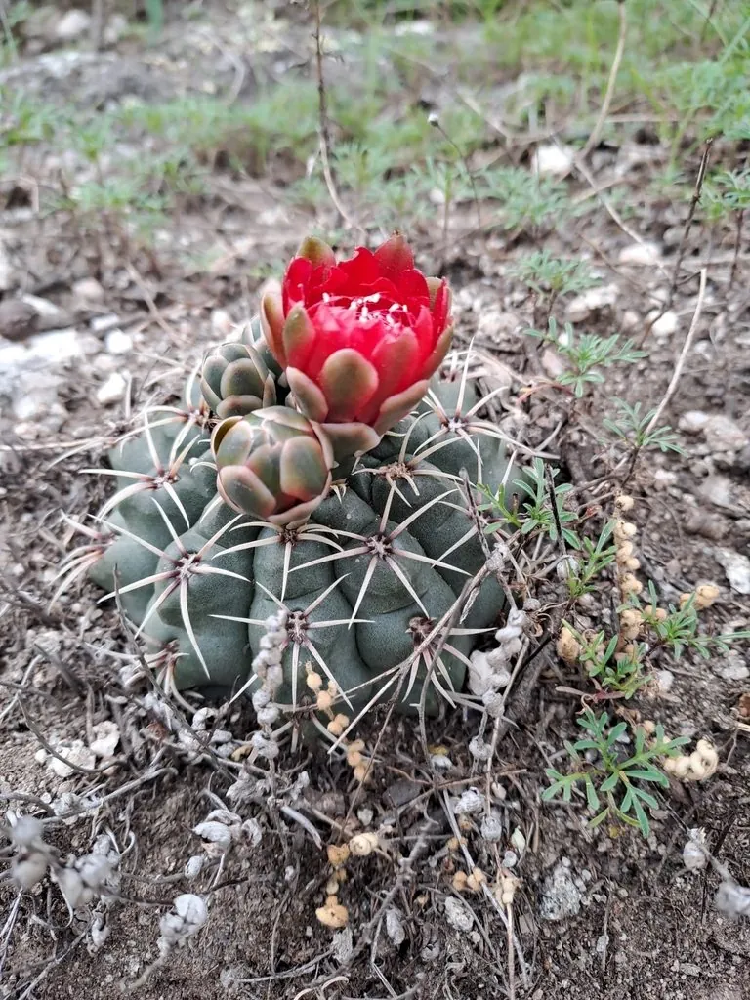

多肉植物 · 植物界
绯花玉 Gymnocalycium baldianum

仙人掌科裸萼球属多年生肉质植物，球体扁圆、棱脊圆润，花鲜红色、花大而多，是仙人球中著名的开花机器。
- 分类
- 门被子植物门纲木兰纲目石竹目科仙人掌科属裸萼球属
- 栖息环境
- 原产阿根廷中部干旱山地，喜光耐旱、通风良好
- 地理分布
- 原产阿根廷中部；中国各地作为观赏仙人球栽培
- 保护级别
- 暂无评估；栽培观赏植物，不涉及保护等级
物种志
绯花玉为仙人掌科裸萼球属多年生肉质植物，球体扁球形，高约五至十厘米，直径七至十厘米，表皮灰绿色。棱八至十二条，棱脊圆润，刺座稀疏，周刺五至七枚、淡黄色，中刺常缺失。花生于球体顶部，花冠漏斗状，鲜红色至粉红色，花径可达四厘米，花期五月至九月，可多次开花；浆果长圆形，成熟时灰绿色，种子黑色。
绯花玉原产阿根廷中部，中国各地作为观赏仙人球广泛栽培。它喜光、耐旱，夏季为生长和开花旺季；适宜疏松透气、排水良好的颗粒基质，忌积水和闷热。花鲜红、花量大、易开花，是仙人球中最受欢迎的开花品种之一；球体小巧，适合窗台和小盆栽培。繁殖以播种为主，也可嫁接。
形态与习性
- 株型扁球形，表皮灰绿色
- 球径直径 7–10 cm，棱 8–12 条
- 花期5–9 月，花鲜红色
- 光照极喜光，光照足开花多
- 水分耐旱，干透浇透
- 土壤疏松排水良好的颗粒土
- 主要用途窗台盆栽、仙人球观花
趣味知识
- 绯花玉的花鲜红、花径可达四厘米，在小型仙人球中显得格外硕大。
- 它一年可开好几次花，养护得当能从初夏一直开到秋天。
- 绯花玉的球体扁圆、刺稀疏，放在窗台上不容易扎手，适合家庭栽培。